Portal
Rezident özünəxidmət
Müraciət, qonaq, sənəd və sahə planı — şirkət istifadəçisi brauzerdən.
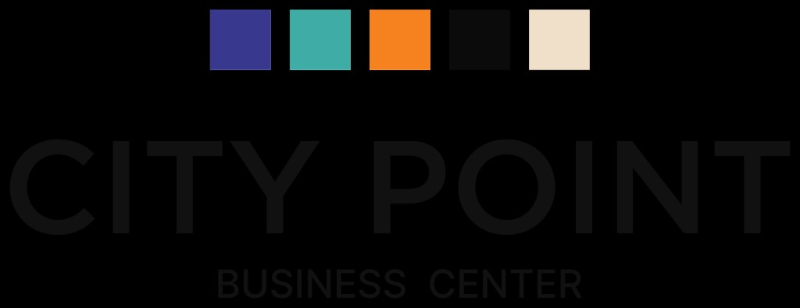
City Point ERP
Rezident portal, staff ERP, təhlükəsizlik və qəbul — eyni məlumat bazasında. Turniket inteqrasiyası, ticket, əmlak planları, CRM, anbar və maliyyə.
Məhsul
Excel, WhatsApp qrupları, ayrı qonaq jurnalları və turniket proqramı bir-birinə bağlı olmadıqda məlumat itir, SLA pozulur, rəhbərlik real mənzərəni görmür. City Point ERP bu boşluğu bağlayır.
Müraciət, qonaq, sənəd və sahə planı — şirkət istifadəçisi brauzerdən.
Qəbul, ticket, əmlak, rezident, CRM, FM, anbar, satınalma, hesablaşma.
AxTrax giriş/çıxış, binada olanlar, parkinq, kart xəbərdarlıqları.
İdarə paneli
Açıq müraciətlər, SLA riski, bugünkü qonaqlar, rezident sayı və AxTrax sinxron statusu — rəhbərlik və ops eyni paneldə.
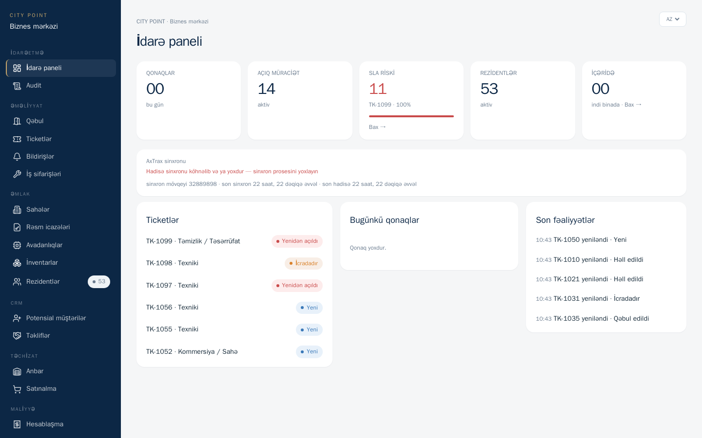
Staff ERP — idarə paneli (City Point canlı mühit)
Əmlak
15 mərtəbə, onlarla ofis sahəsi, doluluq və rezident əlaqəsi. Sahə əlavə/düzəliş, DXF və texniki plan yükləmə, rezidentə plan icazəsi.
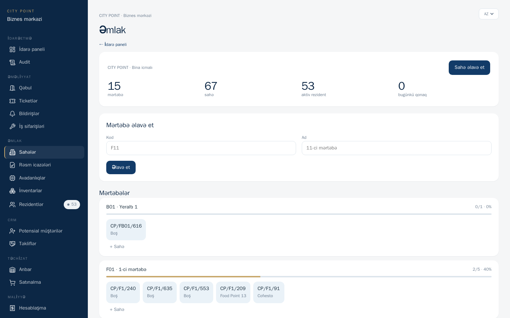
Əmlak → Sahələr
Təhlükəsizlik
AxTrax NG ilə LAN inteqrasiya: giriş/çıxış, oxuyucu, kart, şirkət. Binada olanlar, parkinq, qonaq jurnalı və müraciətlər ayrı security portalında.
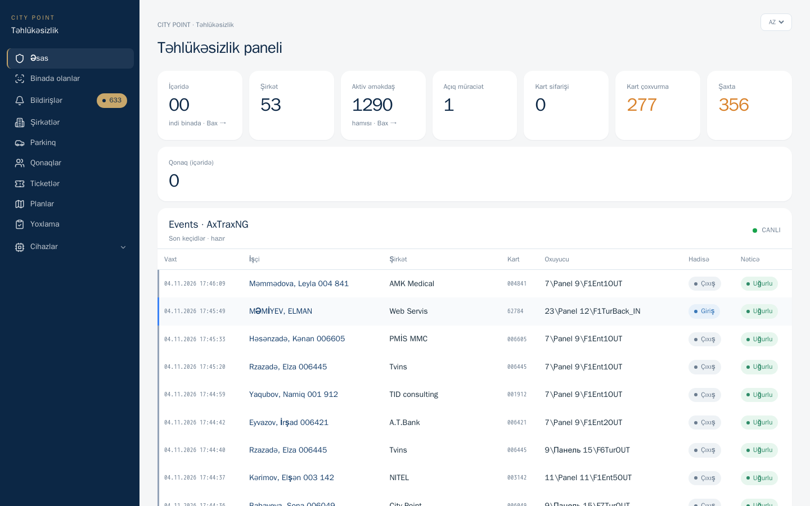
Security portal — AxTrax hadisələri
Portallar
Eyni məlumat, fərqli ekranlar — qarışıqlıq və səhv hüquq yoxdur.
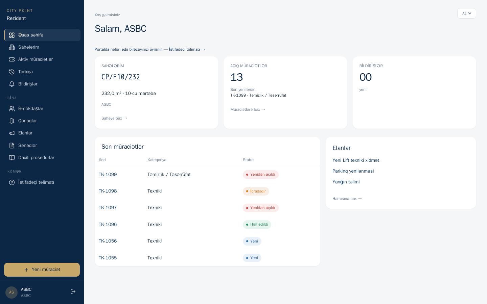
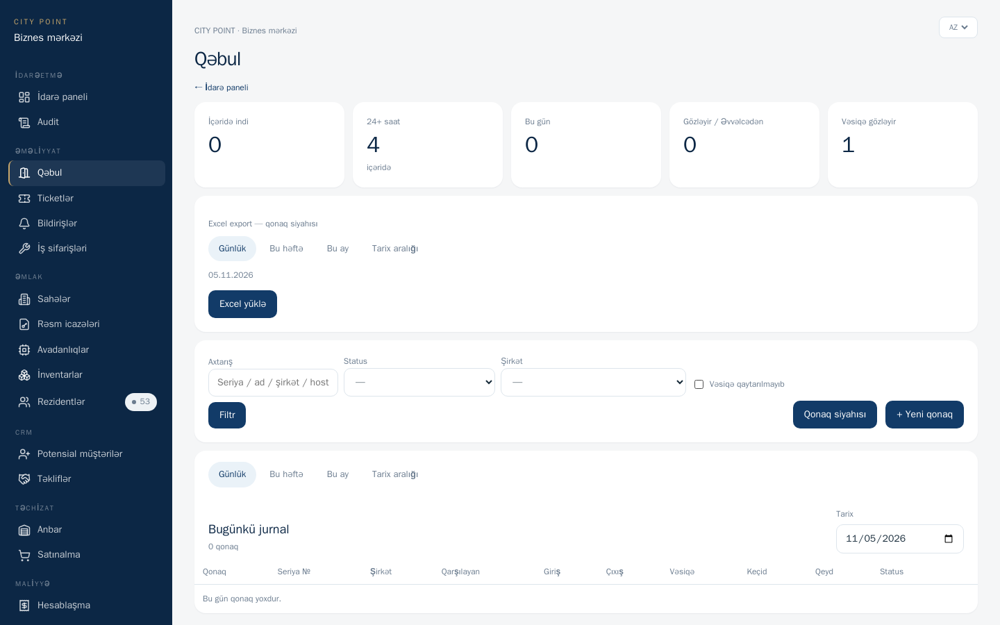
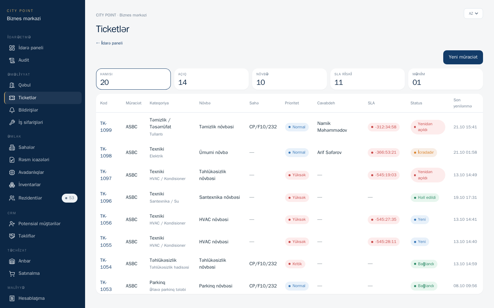
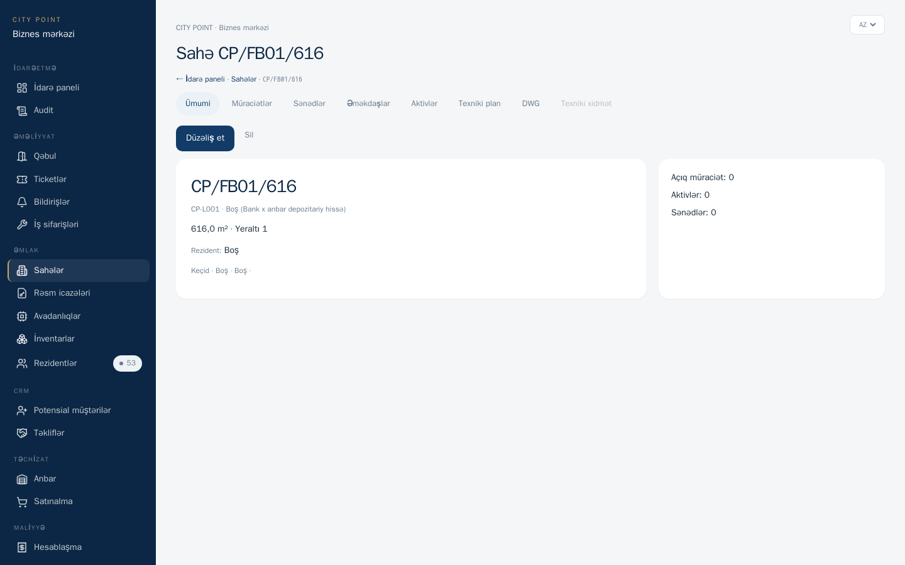
Tam modul xəritəsi
Aşağıdakılar məhsulun funksionallıq kataloqudur. Bəzi kommersiya modulları tətbiq dərinliyinə görə mərhələli açılır; əsas əməliyyat (portal, ticket, qəbul, security, əmlak) istehsalda işləyir.
Kommersiya + təchizat
Satış hunisi və təchizat eyni ERP-də — ayrı Excel cədvəlləri lazım deyil.
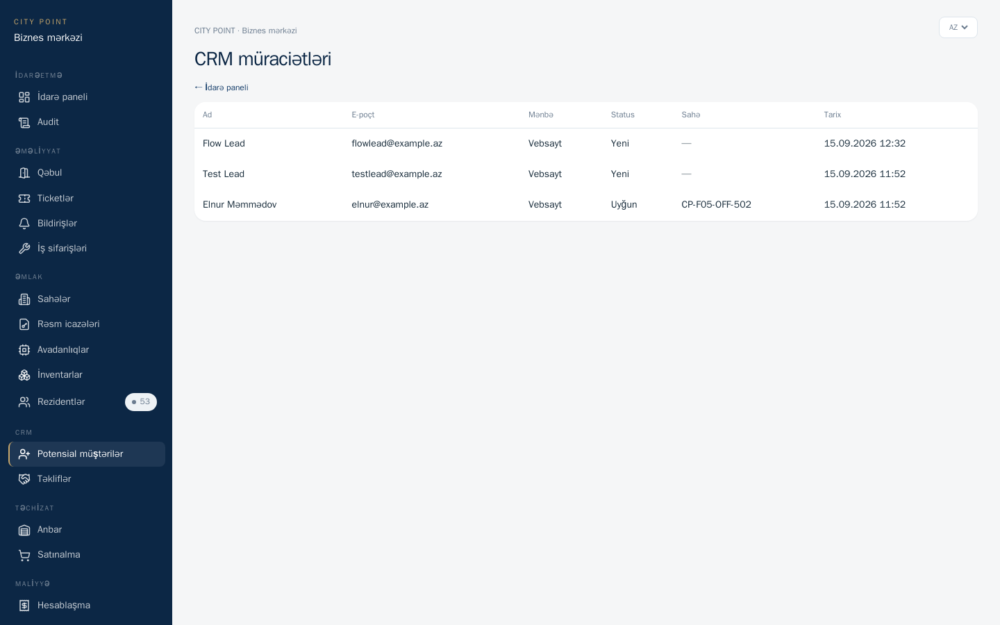
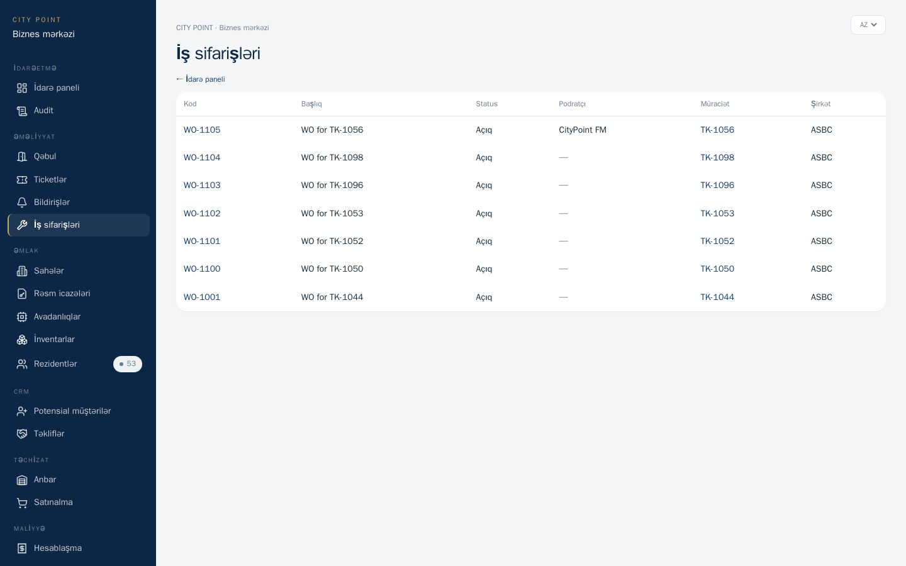
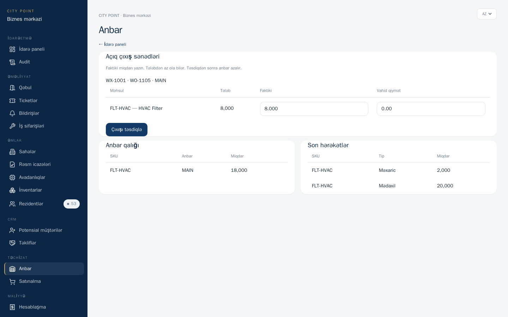
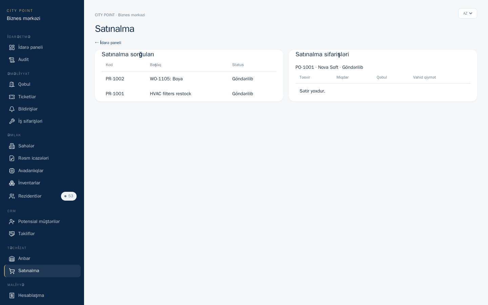
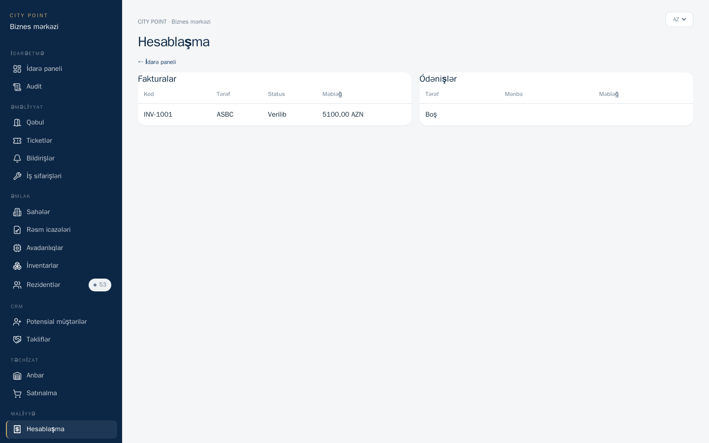
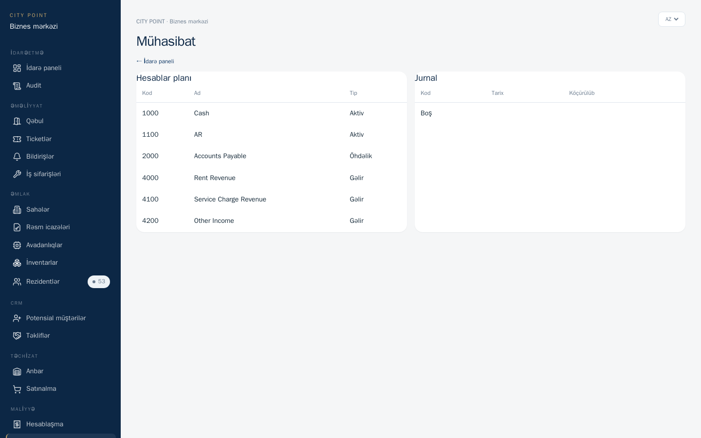
Tipik axın
Niyə biz
| Mövzu | Excel + ayrı proqramlar | City Point ERP |
|---|---|---|
| Qonaq + ticket + turniket | Ayrı fayllar, əl ilə uzlaşdırma | Vahid DB, canlı AxTrax |
| Rezident özünəxidmət | Telefon / WhatsApp | Portal + izləmə |
| Sahə planları | Paylaşılan qovluq | ACL + private storage |
| Rol təhlükəsizliyi | Hamı eyni fayla baxır | Portal / ERP / Security ayrımı |
| On-prem / LAN | Qarışıq | Daxili server, air-gap uyğun |
| Dil | Çox vaxt yalnız EN | AZ / EN / RU |
Texniki əsas
Django + PostgreSQL, Nginx/Gunicorn, AlmaLinux on-prem.
AxTrax MS SQL (LAN), e-poçt/outbox, opsional Outlook Graph.
Rol ACL, private media, audit izi, air-gapped iş rejimi.